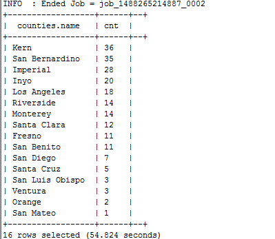

GIS Tools for Hadoop对接FusionInsight¶
适用场景¶
GIS Tools for Hadoop 1.0 ↔ FusionInsight HD V100R002C60U20 (Hive/MapReduce)
aggregation-hive¶
参考GIS说明https://github.com/Esri/gis-tools-for-hadoop/tree/master/samples/point-in-polygon-aggregation-hive中关于集成Hive的示例，在华为FusionInsight HD中执行该示例。
-
获取gis源代码https://github.com/Esri/gis-tools-for-hadoop/
-
完成FusionInsight HD V100R002C60U20的安装，包含Hive组件。
-
在FusionInsight Manager创建一个HiveAdmin角色，具体请参加《FusionInsight HD 管理员指南》的 创建Hive角色 章节。

-
在FusionInsight Manager创建一个“机机”用户，具体请参见《FusionInsight HD 管理员指南》的创建用户章节。将用户加入上面创建的角色HiveAdmin。例如，创建用户 testuser 并下载对应的keytab文件user.keytab以及krb5.conf文件
-
安装FusionInsight HD的客户端，具体请参见《FusionInsight HD 管理员指南》的安装和使用客户端章节。
-
将下载的gis tools源码通过WinSCP工具上传到安装有FusionInsight HD客户端所在节点的
/opt目录下，上传源码目录为gis-tools-for-hadoop-master -
将下载的gis tools源码通过FusionInsight HD的客户端上传到HDFS文件系统中，将目录gis-tools-for-hadoop-master直接放到HDFS的根目录下，命令参考
source /opt/hadoopclient/bigdata_env
kinit -k -t /opt/user.keytab testuser
hadoop fs -put -f /opt/gis-tools-for-hadoop-master /gis-tools-for-hadoop-master
- 修改执行hive示例的sql文件，修改后的文件如下
set role admin; add jar hdfs:///gis-tools-for-hadoop-master/samples/lib/esri-geometry-api.jar; add jar hdfs:///gis-tools-for-hadoop-master/samples/lib/spatial-sdk-hadoop.jar; reload function; DROP TABLE earthquakes; DROP TABLE counties; create temporary function ST_Point as 'com.esri.hadoop.hive.ST_Point'; create temporary function ST_Contains as 'com.esri.hadoop.hive.ST_Contains'; CREATE EXTERNAL TABLE IF NOT EXISTS earthquakes ( earthquake_date STRING, latitude DOUBLE, longitude DOUBLE, depth DOUBLE, magnitude DOUBLE, magtype string, mbstations string, gap string, distance string, rms string, source string, eventid string ) ROW FORMAT DELIMITED FIELDS TERMINATED BY ',' STORED AS TEXTFILE LOCATION 'hdfs:///gis-tools-for-hadoop-master/samples/data/earthquake-data'; CREATE EXTERNAL TABLE IF NOT EXISTS counties ( Area string, Perimeter string, State string, County string, Name string, BoundaryShape binary ) ROW FORMAT SERDE 'com.esri.hadoop.hive.serde.JsonSerde' STORED AS INPUTFORMAT 'com.esri.json.hadoop.EnclosedJsonInputFormat' OUTPUTFORMAT 'org.apache.hadoop.hive.ql.io.HiveIgnoreKeyTextOutputFormat' LOCATION 'hdfs:///gis-tools-for-hadoop-master/samples/data/counties-data'; SELECT counties.name, count(*) cnt FROM counties JOIN earthquakes WHERE ST_Contains(counties.boundaryshape, ST_Point(earthquakes.longitude, earthquakes.latitude)) GROUP BY counties.name ORDER BY cnt desc;
- 使用FusionInsight HD客户端执行修改后的sql文件，命令参考
source /opt/hadoopclient/bigdata_env kinit -k -t /opt/user.keytab testuser cd /opt beeline -f gis-tools-for-hadoop-master/samples/point-in-polygon-aggregation-hive/run-sample.sql
- 执行结果如下，与GIS开源网站描述一致

aggregation-mr¶
参考GIS说明https://github.com/Esri/gis-tools-for-hadoop/tree/master/samples/point-in-polygon-aggregation-mr中关于集成MR的示例，在华为FusionInsight HD中执行该示例。
-
获取gis源代码https://github.com/Esri/gis-tools-for-hadoop/
-
完成FusionInsight HD V100R002C60U20的安装，包含Hive组件。
-
在FusionInsight Manager创建一个“机机”用户，具体请参见《FusionInsight HD 管理员指南》的创建用户章节。将用户加入上面创建的角色HiveAdmin。例如，创建用户“testuser”并下载对应的keytab文件user.keytab以及krb5.conf文件
-
安装FusionInsight HD的客户端，具体请参见《FusionInsight HD 管理员指南》的安装和使用客户端章节。
-
将下载的gis tools源码通过WinSCP工具上传到安装有FusionInsight HD客户端所在节点的
/opt目录下，上传源码目录为gis-tools-for-hadoop-master -
修改
/opt/gis-tools-for-hadoop-master/samples/point-in-polygon-aggregation-mr/cmd/sample-config.sh如下，其中26004为yarn配置的yarn.resourcemanager.port端口
#!/bin/bash NAME_NODE_URL=hdfs://hacluster JOB_TRACKER_URL=162.1.93.103:26004 SAMPLE_DIR=/tmp/gistest JOB_DIR=$SAMPLE_DIR/job LIB_DIR=$SAMPLE_DIR/lib DATA_DIR=$SAMPLE_DIR/data OUTPUT_DIR=$SAMPLE_DIR/output
- 修改
/opt/gis-tools-for-hadoop-master/samples/point-in-polygon-aggregation-mr/cmd/run-sample.sh的执行权限，并执行
source /opt/hadoopclient/bigdata_env kinit -k -t /opt/user.keytab testuser cd /opt/gis-tools-for-hadoop-master/samples/point-in-polygon-aggregation-mr/cmd/ chmod u+x run-sample.sh sh run-sample.sh
- 执行完毕得到如下结果文件result.txt